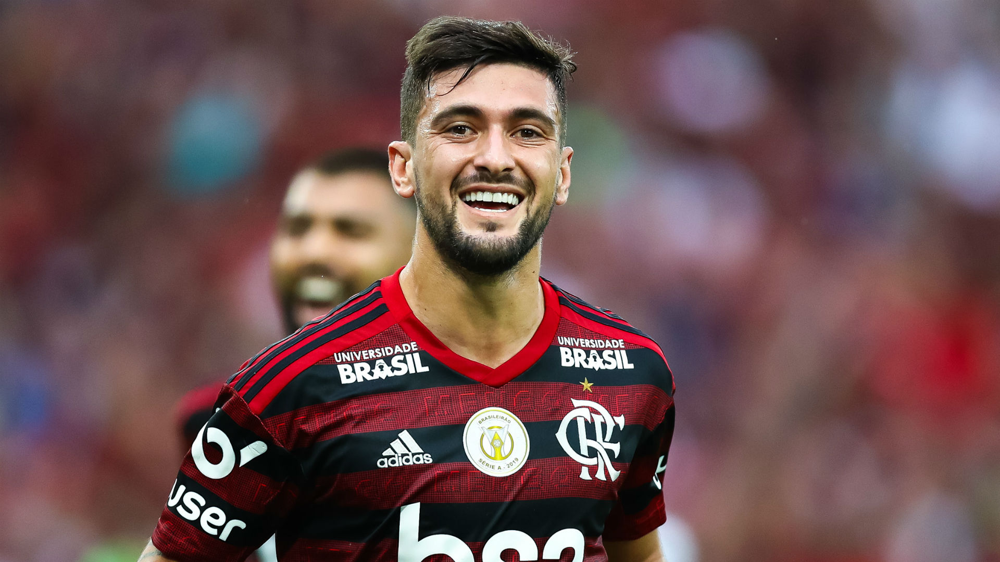

Índice da Biografia:
- Infância
- Carreira
- Seleção Uruguaia
- Posição do Jogador
- Quais times Arrascaeta jogou
- Conquistas do Jogador
- Curiosidades
Filho de Alfredo e Victoria, Giorgian Daniel De Arrascaeta Bennedetti nasceu no dia primeiro de junho de 1994 na pequena cidade de Nuevo Berlín no Uruguai.
A cidade de 2,5 mil habitantes, as margens do Rio Uruguai, logo percebeu o talento diferente e raro do pequeno. Apesar das poucas condições da família, o pai de Arrascaeta se dedicava de forma integral no desenvolvimento do filho.
O pouco dinheiro extra, conseguido em competições de cavalo, onde o pai participava como jóquei, eram utilizados para comprar chuteiras para o garoto.
O esforço começou a ser recompensado quando, em um campeonato municipal na cidade de origem de Arrascaeta, o garoto começou a se destacar atuando pelo Club Pescadores Unidos, onde em uma temporada marcou 49 gols.
Após se destacar no clube municipal, Giorgian resolveu se submeter a testes nos grandes clubes uruguaios. Aos 15 anos, foi reprovado no Danúbio, e após, foi aprovado no Defensor de Montevidéu.
No clube, Arrascaeta foi vice campeão da Libertadores da América Sub-20 de 2013. No mesmo ano, já na equipe principal, foi campeão do Torneio Clausura. No ano seguinte o jovem foi um dos destaques da campanha do time na Libertadores, ajudando a colocar a equipe entre as quatro melhores do torneio. A campanha de destaque fez com que diversos times começassem a desejar contar com o jogador. Após diversos rumores de equipes sul-americanas e europeias, Giorgian foi anunciado pelo Cruzeiro em 19 de janeiro de 2015.
Aos 20 anos, Giorgian chegou ao então bicampeão brasileiro como uma grande promessa. O meia assinou com o time mineiro por 5 temporadas, tendo a equipe desembolsado um valor equivalente a 4 milhões de euros. Apesar de seu inegável talento, o jovem demorou a se adaptar ao futebol e ao cotidiano brasileiro. Fato esse que era agravado pelo seu porte físico mais fraco e sua timidez no extra campo. As exibições do meia passaram a ser mais vistosas a partir de 2016, e principalmente nos dois anos seguintes, quando auxiliou a equipe celeste a conquistar o bicampeonato da Copa do Brasil (fato inédito na competição).
Nas finais, contra Flamengo e Corinthians, respectivamente, o meia uruguaio foi destaque, marcando gols no primeiro jogo contra os rubro-negros (2017) e no segundo contra os alvinegros (2018). Após 4 anos na equipe mineira, Giorgian entrou para a história do futebol brasileiro após um litígio envolvendo o jogador, seu agente, o Cruzeiro e o Flamengo, sendo que o último acabou se tornando seu destino para a temporada 2019.
Além da confusão jurídica, a transferência também se destaca pelos altos valores. A equipe carioca desembolsou valores próximos aos 13 milhões de euros, superando o valor desembolsado pelo Corinthians para contratar Carlitos Tevéz, em 2004, que até então era os maiores valores gastos por equipes brasileiras. O contrato foi assinado no dia 12 de janeiro de 2019, sendo firmado até 2023. Pelo clube rubro-negro, Giorgian, vem se destacando nas atuais campanhas na Libertadores (classificado para a final) e no Campeonato Brasileiro (primeiro colocado). Sendo importante também no título Carioca da equipe.
Giorgian De Arrascaeta possui participações na seleção do seu país desde o sub-20, quando atuou em 20 partidas, fazendo 4 gols e dando 2 assistências.
Na seleção principal o meia já realizou 25 jogos, tendo contribuído com 3 gols e 4 assistências.
O atleta participou do plantel da seleção uruguaia na Copa América de 2015 e na Copa do Mundo de 2018.
Apesar de ser considerado por muitos especialistas como o camisa 10 clássico, ou seja, o armador e a “cabeça pensante” da equipe, Giorgian se destaca sendo um meia ofensivo.
Suas principais características são a velocidade, a capacidade de dribles curtos e a precisão nas finalizações, especialmente no seu pé direito.
Por essas características, o meia também pode ser utilizado como atacante de lado de campo, em ambos os lados.
Conforme já citamos, o clube formador de Giorgian foi o Club Pescadores Unidos. Após, o jovem foi aprovado nas categorias de base do Defensor Sporting de Montevidéu, sendo promovido posteriormente ao time principal. Pelo clube, Arrascaeta fez 53 jogos, contribuindo com 16 gols e 13 assistências.
Após a campanha de destaque na Libertadores de 2014, inclusive contra o próprio Cruzeiro, o jogador se transferiu para a equipe mineira. Em Minas Gerais Giorgian jogou 90 partidas, fazendo 22 gols e dando 18 assistências.
Com a excelente trajetória no clube celeste, Giorgian foi comprado no início de 2019 pelo Flamengo. Onde já realizou 15 jogos e tem a excelente marca de 11 gols e 8 assistências.
Além dos clubes, Arrascaeta também participou das equipe sub-20 e principal da seleção Uruguaia. Na seleção sub-20 o meia fez 20 partidas, tendo anotado 4 gols e 2 assistências. Na principal foram 25 jogos com 3 gols e 4 assistências.
Apesar de ainda jovem, Arrascaeta já se destaca por seus títulos, tendo sido campeão em todos os três times em que atuou e também pela sua seleção. São eles:
- Torneo Clausura 2013 pelo Defensor Sporting;
- Copa do Brasil 2017 pelo Cruzeiro;
- Campeonato Mineiro 2018 pelo Cruzeiro;
- Copa do Brasil 2018 pelo Cruzeiro;
- Taça Rio 2019 pelo Flamengo;
- Campeonato Carioca 2019 pelo Flamengo;
- Copa Kirin 2014 pelo Uruguai;
- China Cup 2018 pelo Uruguai;
- China Cup 2019 pelo Uruguai.
Além dos títulos, o jogador também se destaca pelos prêmios individuais. Valendo destacar:
- Jogador Revelação do Campeonato Uruguaio – Temporada 2012/2013
- Melhor Meia de Criação do Campeonato Uruguaio – Temporada 2013/2014
- Melhor Estrangeiro do Campeonato Brasileiro – 2016
- Seleção do Campeonato Mineiro – 2017
- Troféu Guará como melhor meia – 2018
- Troféu Guará craque do ano – 2018
- Seleção do Campeonato Brasileiro – 2018
- Sexto gol mais bonito do ano na eleição do Prêmio Puskas 2017/2018

Além de ser a transferência com maiores cifras do futebol brasileiro, a carreira de Giorgian De Arrascaeta onta também com outros fatos interessantes. Vamos a eles:
- Chuteiras amarelas:
Arrascaeta iniciou sua trajetória no mundo do futebol contando apenas com um par de chuteiras de cor amarela.
O equipamento foi utilizado nos campeonatos municipais até que estivesse completamente estragado e hoje é guardado como um troféu por seus pais, juntamente com o uniforme da época.
Por utilizar apenas aquele equipamento o garoto, quando foi convocado pelo selecionado do estado de Río Negro, foi identificado como o “garoto das chuteiras amarelas” por não saberem o seu nome.
- Amor às origens:
Apesar da ótima situação financeira atual do filho o casal Alfredo e Victoria continuam morando na mesma localidade, na pequena cidade de Nuevo Berlín.
A cidade inclusive é roteiro constante do jogador, que costuma passar férias com a família, onde também se refugiou nos difíceis dias da pendência jurídica junto ao Cruzeiro.
Além de frequentador, Arrascaeta também é um colaborador. Durante a Copa do Mundo de 2018, o jogador confeccionou 250 camisas do Uruguai com o seu nome e mandou entregar aos alunos da sua escola de infância.
Involuntariamente o jogador também auxilia sua comunidade. Parte do dinheiro da contratação de Arrascaeta pelo Cruzeiro foi destinado ao Club Pescadores Unidos, por ter sido a equipe formadora.
O valor foi utilizado na compra de um ônibus que faz as viagens dos jovens para os jogos dos campeonatos que disputam na região. A traseira do veículo tem uma foto do craque e das crianças da equipe, tirada em uma visita do meia ao antigo clube.
- Histórico:
A passagem do meia pelas terras mineiras, apesar do gostinho amargo do final, deixaram algumas marcas significantes.
Arrascaeta se tornou o estrangeiro com mais partidas oficiais pelo Cruzeiro, somando um total de 188 jogos, ultrapassando o ídolo argentino Roberto Perfumo.
Ele também se sagrou o maior artilheiro estrangeiro da história da equipe, com 50 gols e o maior artilheiro do novo Mineirão.
Também pela equipe celeste, o uruguaio disputou o prêmio do gol mais bonito da temporada 2017/2018, o Prêmio Puskas. O gol selecionado foi marcado de voleio pelo meia contra o América Mineiro, em jogo válido pelo campeonato estadual.
Outro fato interessante da passagem de Giorgian pelo Cruzeiro é o meia ter viajado 25 horas, após um amistoso com a sua seleção no Japão, para ficar a disposição da equipe mineira na final da Copa do Brasil de 2018.
Na oportunidade o craque entrou no decorrer do segundo tempo e marcou o gol da vitória e do título sobre o Corinthians.